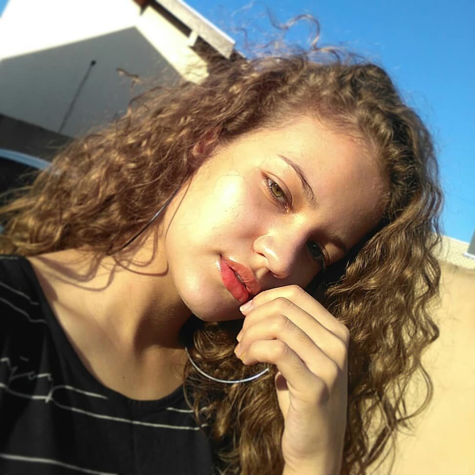
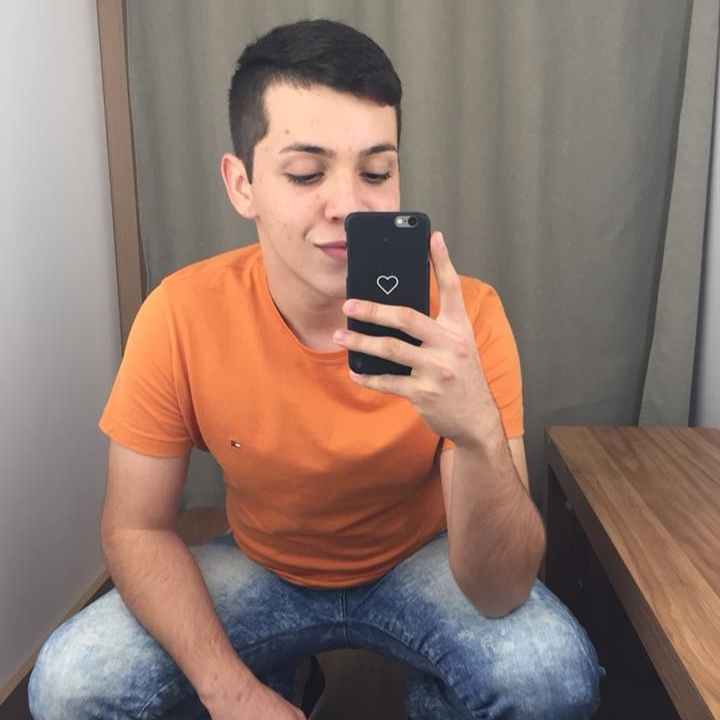

Nossa história
O nome do site, Lutz, é uma homenagem à feminista Bertha Maria Julia Lutz. Bertha Lutz foi uma ativista pelo feminismo, bióloga e política brasileira. Foi especializada em anfíbios, pesquisadora do Museu Nacional e uma das figuras mais significativas do feminismo e da educação no Brasil do século XX.
Nosso principal objetivo é que todos aqueles que acessem este site tenham empatia e compreendam que o machismo existe sim, e deve ser combatido.
Queremos empoderar mulheres e conscientizá-las a respeito do machismo que sofremos todos os dias, muitas vezes, sem nem saber.
Também temos como objetivo informar e esclarecer aos homens que nos acompanham o fato de que não se deve tomar o lugar de fala ou tocar em uma mulher sem sua permissão, pois isso é errado.
Quem somos nós?
Ana Beatriz Silva Cortonezi
Feminista, estudante do Curso Técnico Integrado em Informática para Internet no IFMS - Campus Dourados. Quase não dorme e viaja todos os dias. Muito organizada e decidida, já sabe qual faculdade quer fazer. Sempre de mau humor das 7h da manhã às 9h15, depois é um amorzinho. Edita e posta neste site nas horas vagas (que são poucas, já que estuda no IF).
João Mateus Baldonado
Estudante do Curso Técnico Integrado em Informática para Internet no IFMS - Campus Dourados. Passa seu tempo livre vendo séries na Netflix, não fazendo dieta e ocasionalmente comendo muito chocolate. Não quer escolher entre Friends e How I Met Your Mother, não pergunte. Edita e posta neste site nas horas vagas (que são poucas, já que estuda no IF).